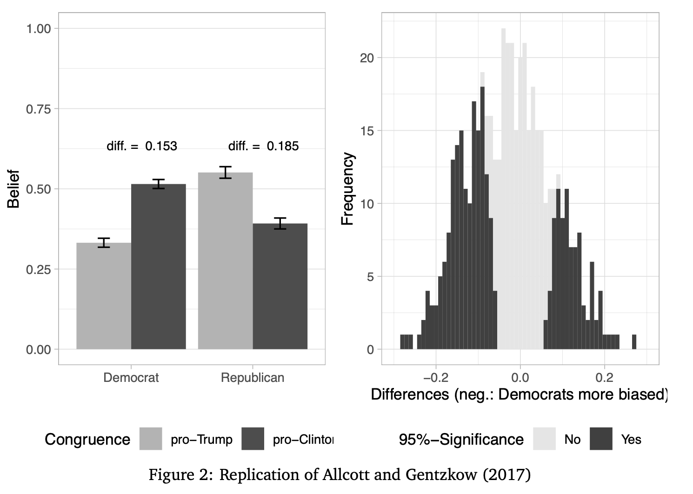
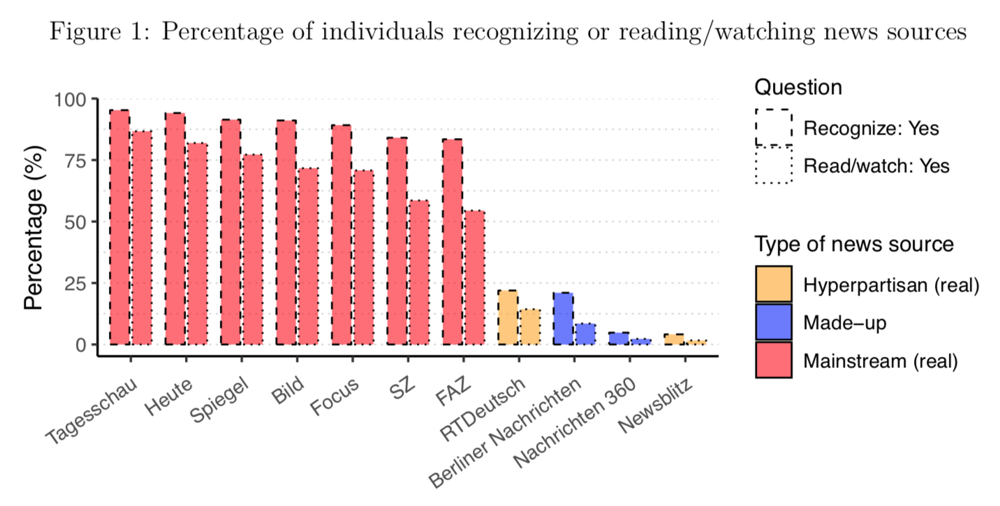

Welcome! I am a Phd Researcher in political science at the European University Institute (Florence), currently visiting the Hertie School Data Science Lab in Berlin. I was previously a visitor at the psychology department of New York University. For my research in political psychology and public opinion I use experimental methods, surveys, text-as-data and social media data. Before my PhD, I worked for the media/tech startup Opinary and wrote on politics and culture for various German and English news sites. Previous studies brought me to the University of Oxford on the Adam-von-Trott Scholarship, to the Université Panthéon-Sorbonne in Paris and the Universität Bayreuth.
July 30, 2020. New working paper: In this study, I examine the paradigmatic designs to test differences between conservatives and liberals in truth discernment, as well as in assimilation bias. A typical design selects a set of real-world stimuli, but without clearly ensuring representativeness. As the graph below shows, this design is not robust against slight variation of the stimuli.
March 18, 2020. Shiny App for visualizing identities of Twitter users (prototype): For this project I want to show how self-ascribed identities, as they show up in the Twitter "bio", are distributed geographically. This prototype version illustrates, with a non-representative data set of Twitter users, how a couple of political and social identities spread across the US.
Jan 7, 2020. R function for finding a "typical" tree in a random forest: Random forest are easy to understand when visualized. To avoid not seeing the trees behind the forest, one intuitive way to visualize is to plot a "typical" tree. Building on the "grf"-package for R, this function picks and plots the tree with common partitions.
Nov 18, 2019. Python function for approximating following dates of Twitter followers: The Twitter API does not provide information about when a Twitter user started following another. This code allows you to infer the earliest possible date a user can have started following another user.
Oct 18, 2019. Shiny App for teaching experimental methods: This app helps teaching the role of randomization in experiments. Experiments are considered the "gold standard" of causal inference because through randomization, treatment groups are in expectation equal on known as well unknown variables. The app allows users to re-assign treatment groups and observe distribution on a number of background variables.
Aug 27, 2019. New working paper with Paul Bauer: "Building Trust in Fake Sources. An Experiment". What makes people trust some sources and distrust others? In a survey experiment using highly realistics stimuli, we investigate the impact of the source (known vs. unknown), channels of distribution (Facebook vs. website), and congruence of content on media trust and sharing. A key finding shows that a source that we make up - and is thus unknown to people - can gain people's trust if it caters to their pre-existing attitudes.
June 24, 2019. Early Career Scholar's contribution for the ISPP blog: In this blog post I discuss how much we can trust social media users to rate trustworthiness of sources.